Mapa de navegación

Referencias Imágenes
| Imagen | Autor | Enlace |
|---|---|---|
| aragorn.jpg | Peter Jackson | Link |
| arda.webp | LOTR wiki | Link |
| background.jpg | Peter Jackson | Link |
| buldings.jpg | Shifting Lands | Link |
| campos.jpg | Lina Willow | Link |
| denethor.jpg | Peter Jackson | Link |
| faramir.webp | Peter Jackson | Link |
| historia.jpg | Eöl Vardamir | Link |
| index.jpg | Gordon Kuznetsov | Link |
| map.jpg | Lina Willow | Link |
| plane.jpg | Wikipedia | Link |
| title.jpg | wallpaper.dog | Link |